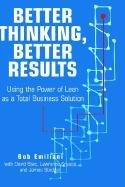

《更好的思维，更好的结果》出版于2003年，是鲍勃·埃米利亚尼（Bob Emiliani）与戴维·斯特克（David Stec）、劳伦斯·格拉索（Lawrence Grasso）、詹姆斯·斯托德尔（James Stodder）合著的一部案例研究。本书荣获2003年新乡奖（Shingo Prize），也是首部在一家真实企业中完整记录精益管理（Lean management）两大核心原则——"持续改善"与"尊重人"——同时付诸实践的学术著作。研究对象是美国线缆管道制造商威瑞蒙德公司（Wiremold Company）从1991年至2001年间历时十年的精益转型。
威瑞蒙德的转型始于1991年首席执行官阿特·拜恩（Art Byrne）的就任。拜恩是精益管理界罕见的真信徒——他在丹纳赫（Danaher）任职期间已积累了丰富的精益实践经验，到任后立即着手将丰田生产方式（Toyota Production System）的核心逻辑引入这家传统制造企业。本书对这一过程的记录极为详尽：精益原则如何从车间生产线蔓延至人力资源、财务、销售、市场、工程、并购以及整个供应链；管理层如何打破职能壁垒，重新设计价值流；员工的思维方式与行为习惯如何随着环境改变而逐步转化。威瑞蒙德于1999年荣获新乡奖，是精益转型成功的有力印证。
本书最重要的贡献在于，它揭示了精益管理被大多数企业误解的一个根本问题：精益不是一套制造工具，而是一种整体经营哲学，其实质是改变人的思维方式——管理者与员工看待问题、分析浪费、解决矛盾的方式。埃米利亚尼在书中反复强调，那些仅将精益视为削减成本手段的企业，往往只能获得短期的局部改善，而无法触及系统性的竞争力提升。威瑞蒙德之所以成功，正是因为拜恩和他的团队将精益理解为一种持续学习的文化，而非一次性的流程再造项目。
对于关注企业管理、运营卓越与组织变革的读者，《更好的思维，更好的结果》提供了一个极为难得的第一手记录：它不仅展示了结果，更追溯了导致这些结果的思维根源与管理选择。在大量讨论精益转型的文献中，本书因其学术严谨性与实践细节的平衡而独树一帜，被精益管理学界和企业实践者广泛引用至今。